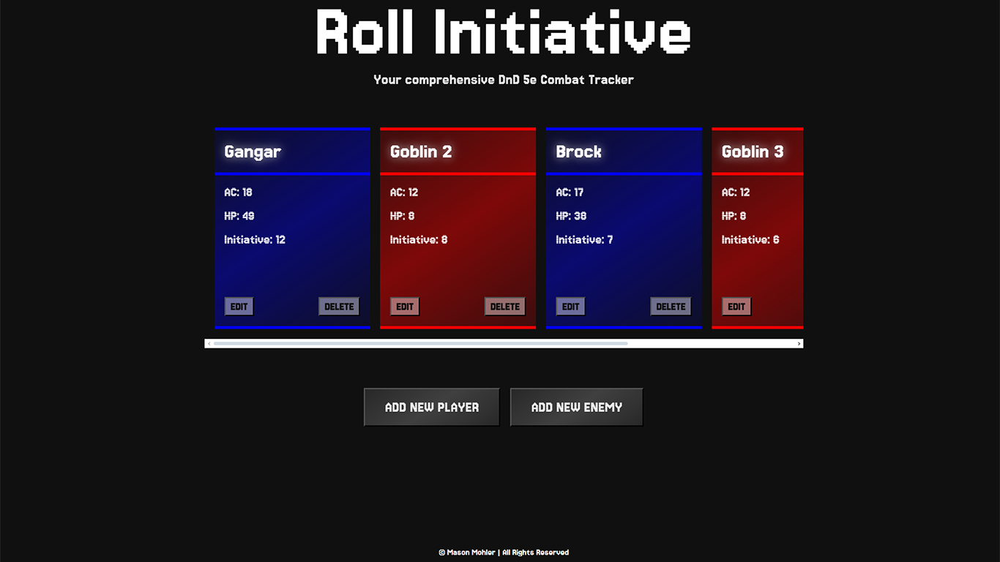
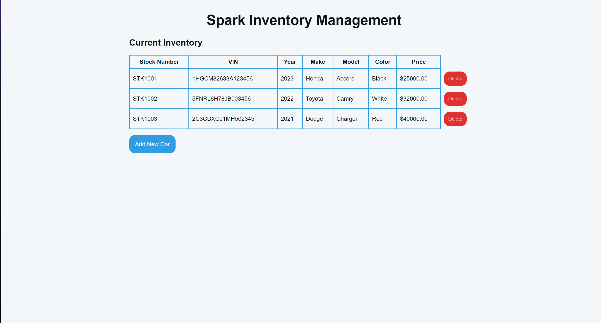

Newton County Adventure Company

I led a development team to create a website for the fictional outfitting company Newton County Adventure Company. We used HTML and CSS to build out the page and style it, and then we added JavaScript to call an API that would allow us to get current river levels and flow rates for the Buffalo River.
Mars Rover Photo Explorer

I created a website that allows the user to explore pictures taken by 3 different Mars rovers on various days. I used HTML and CSS for the main structure of the page, then I used JavaScript to call the NASA API and get photos based on the rover and date selected by the user.
NOTE: Since the creation of this website, NASA has moved the images for the Opportunity and Spirit rovers. The metadata for these rovers is still being fetched from the API, but the only rover that will currently display pictures in searches is the Curiosity. I have reached out to NASA about this and have not yet gotten a response.
Roll Initiative DnD Combat Tracker
Roll Initiative is a web application I created to track combat in Dungeons and Dragons. It allows the user to add new players and new enemies and automatically sorts them by initiative. It also lets the user edit these players and enemies on the fly, as well as stores their data in their local browser storage so that they can save their progress.
Spark Inventory Management System
Spark Inventory Management is a full-stack web application I designed to streamline inventory management for car lots of any scale. Built with HTML, CSS, JavaScript, Express.js, PostgreSQL, and Node.js, the system enables users to view their current inventory, add new cars, and delete cars. To make this possible, I created a PostgreSQL database hosted on Render so that I could access it online. Then, I created a RESTful API using Node.js and Express.js to communicate with the server, which I also hosted on Render, giving me an online endpoint I could access with my frontend. Finally, I created a simple front end using HTML and CSS for the styling and JavaScript to call the API I made. Overall, this was my most challenging project yet, but I feel like I learned so much while creating it.
NOTE: Becuase I am only using the free tier of Render, my API spins down after periods of inactivity, so please allow 1 minute for the page to load initially. This is not caused by any error in code, the API simply takes some time to spin back up and deploy the information from the database. Once the page has loaded, all operations inside the web application will be much faster.